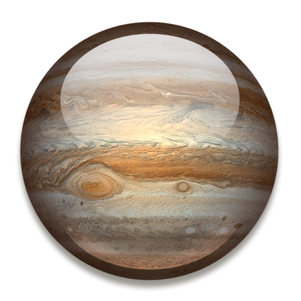

Знайомство із Сонячною системою





Місяць

Місяць — найближчий сусід у космосі. Відстань від Землі до Місяця — 384,4 тис. кілометрів.
Римською богинею, що уособлювала Місяць, вважалася Діана. По камінню і ґрунту, які були доставлені з Місяця на Землю, вчені визначили, що після того як 5 мільярдів років тому сформувалася Сонячна система, розплавлена поверхня Місяця остигла. Потім Місяць зазнав бомбардувань метеорів та інших об'єктів, вибухи стали причиною виникнення кратерів і розломів до пилу твердої кори. Величезні метеорити створили басейни шириною в сотні кілометрів. Вулканічна діяльність Місяця і важкі метеорні «дощі» припинилися близько 3 мільярдів років тому, залишивши позбавлену життя оболонку. Зараз Місяць в основному має такий же вигляд, як і в ті далекі часи. Оскільки на Місяці нема атмосфери, там нема і дощів. Місяць рухається по орбіті навколо Землі. Але що утримує його? Чому він не падає і не летить у космос?
Земля має на Місяць гравітаційний вплив, тому Місяць притягується до Землі замість того, щоб зірватися із своєї орбіти і полетіти. Щоб зрозуміти, чому Місяць «не падає», ви повинні дізнатися, що таке інерція. Один із законів руху Ньютона говорить, що поки сила діє на тіло, яке рухається, воно завжди рухатиметься по прямий. Це і є інерція. Результатом прагнення рухатися по прямій лінії (інерція) і гравітаційної сили Землі і є обертання Місяця навколо нашої планети.
Один із законів руху Ньютона говорить, що поки сила діє на тіло, яке рухається, воно завжди рухатиметься по прямий. Це і є інерція. Результатом прагнення рухатися по прямій лінії (інерція) і гравітаційної сили Землі і є обертання Місяця навколо нашої планети.